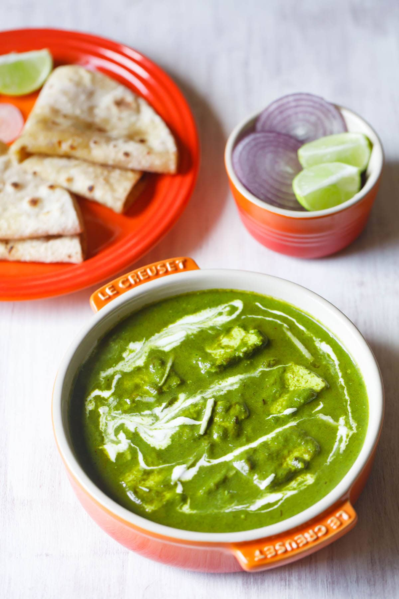

Palak Paneer Recipe

Paneer Paradise: A Palak Delight!
Palak Paneer is one of the most popular Indian dish made with succulent Paneer cubes (Indian cottage cheese) in a smooth spinach sauce. I share two ways to make this healthy dish - a homestyle version and a restaurant style version with a charcoal smoking method (brought back on reader's demand). Both the vibrant green palak paneer recipes are made with fresh spinach leaves (palak in Hindi), aromatics, herbs and spices. Make these super delicious spinach paneer recipes with my easy step-by-step photo guide and video.
Ingredients
- ⅓ cup ghee (clarified butter)
- 1 bulb garlic, peeled and minced
- ½ teaspoon toasted cumin seed
- 1 (6 ounce) can tomato paste
- 1 (3 inch) piece ginger, peeled and minced
- 2 teaspoons garam masala, divided
- 1 teaspoon salt
- 1 large onion, finely chopped
- 1 cup water, or as needed
- 1 (10 ounce) box frozen chopped spinach, thawed and drained
- 1 pound paneer, cut into 1/2-inch cubes
- ¼ cup chopped fresh cilantro
- ¼ cup chopped fresh cilantro
Directions
- Step 1:
Melt ghee in a saucepan over medium-low heat. Stir in garlic and cumin seed; cook until the garlic softens, about 3 minutes. Add tomato paste, ginger, 1 teaspoon garam masala, salt, onion, and water. Increase heat to medium, and stir until the tomato paste dissolves. Simmer slowly for 1 hour, adding water as needed to maintain a sauce-like consistency.
- Step 2:
Stir in spinach and cook until hot, about 5 minutes. Add paneer, and allow to cook an additional 5 minutes, or until hot. Pour into a serving dish and sprinkle with cilantro and remaining 1 teaspoon garam masala.